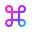

Stay curious
Ask the questions that move the work forward

Sapiens4A team of Sapis, smart agentic coworkers helping you operate with excellence, almost fully autonomously
Let’s work together ↗A conversation on the left. The work on the right
Your Sapis, their notes, and their tasks in between
Try it for yourself
Review the evidence, capture open questions, and produce a brief for a human decision
Assigned to SapiTheChiefOne task, an accountable owner, and a result you can inspect
Interactive interface preview. Select a Sapi or switch views Illustrative content · based on CORPORA
Talk it through. SapiTheChief clarifies the objective and can delegate to the right specialist
Each Sapi maintains its own notes wiki: identity, a map, and linked working knowledge
Research, documents, local files, and computer access, all in a workspace for the results
Ask the questions that move the work forward
Reflect on the work. Recognize what can improve
Bring qualified opinions, doubts, and a better idea
Proactivity, self-reflection, and decisiveness are Sapiens4’s guiding principles
Start from the source. Run Sapiens4 on your Mac, meet your SapiTheChief, and give your team its first task
macOS app setup ↗git clone --recurse-submodules \
https://github.com/aleski-green/sapiens4.git
cd sapiens4
./start.sh --openRequires Python 3.9+, Git, authenticated Codex CLI 0.156.1+, and macOS 13+ with Swift 6 and Accessibility permission for computer access
Read the full setup guide ↗The app, conversations, and notes live on your computer. Model requests run through authenticated Codex CLI and OpenAI services; this is not an offline model
On macOS, Blindly4 enables computer access with Accessibility permission. The shared computer has one Sapi owner at a time. Use it with accounts and tasks you intend to give your Sapis access to
Chat, specialist delegation, individual notes wikis, browser workspaces, and task lists are active. Recurring jobs, scheduled monitoring, and task graph execution are not active yet